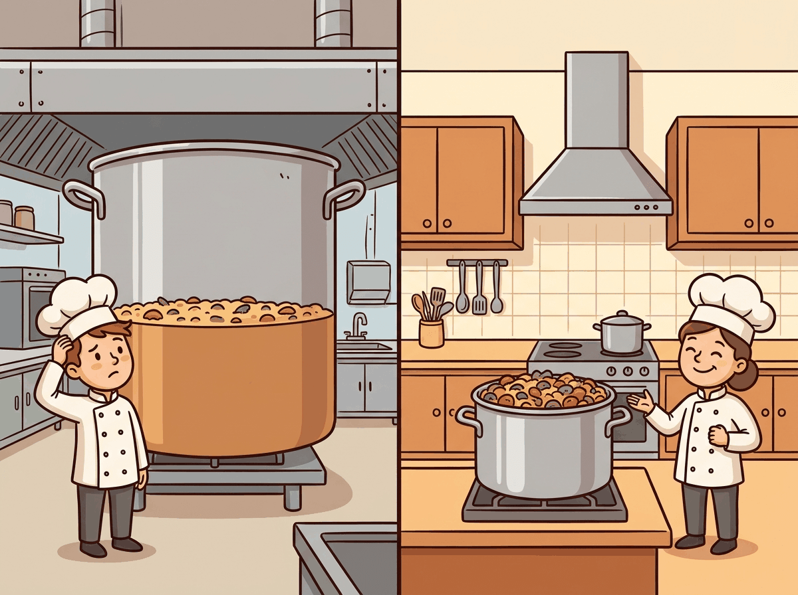

Scaling laws are the rare case where "just make it bigger" turned out to be rigorous science. The math says your model is too small, your data is too little, and your budget is never enough. At least now you can quantify the despair.
A Compute-Optimal AI Agent
Why do scaling laws matter? Training a large language model costs millions of dollars. Scaling laws provide a mathematical framework for predicting a model's performance before committing those resources. They answer critical questions: How big should the model be? How much data does it need? What loss can we expect for a given compute budget? The Kaplan and Chinchilla scaling laws have fundamentally reshaped how the industry trains models, and understanding them is essential for anyone working with LLMs at scale. The pre-training objectives from Section 6.2 define the loss function that scaling laws predict.
Prerequisites
This section assumes familiarity with the landmark models from Section 6.1 and pre-training objectives from Section 6.2. Understanding of logarithmic relationships and basic calculus (derivatives for optimization) helps with the mathematical content. The scaling laws discussed here connect forward to inference-time scaling in Section 7.3.
1. The Power Law Foundation
The remarkable empirical discovery underlying all scaling laws is that language model loss follows a power law relationship with respect to model size, dataset size, and compute. This means that as you increase any of these quantities, loss decreases predictably as a straight line on a log-log plot. Formally, the relationship takes the form:
Here, x is the quantity being scaled (parameters, tokens, or FLOPs), a is a constant, α is the scaling exponent (typically between 0.05 and 0.10), and L∞ is the irreducible loss (the entropy of natural language itself). The irreducible loss represents the theoretical limit: no model, regardless of size, can predict language perfectly because language is inherently stochastic.
This relationship holds across many orders of magnitude, which is what makes it practically useful. You can train a series of small models, fit a power law curve, and then extrapolate to predict the loss of a much larger model.
2. Kaplan Scaling Laws (2020)
The foundational work by Kaplan et al. at OpenAI established three key relationships. First, loss scales as a power law with model parameters N (number of non-embedding parameters):
Second, loss scales as a power law with dataset size D (number of tokens):
Third, loss scales as a power law with compute budget C (in FLOPs (floating-point operations, a count; not to be confused with FLOPS, which measures operations per second)):
Using Scaling Laws to Right-Size a Domain-Specific Model
Who: A research team at a pharmaceutical company planning to pre-train a language model specialized in biomedical literature.
Situation: The team had a fixed compute budget equivalent to 1,000 A100 GPU-hours and access to 50B tokens of biomedical text. They needed to decide on model size.
Problem: Without scaling law guidance, the team initially planned to train a 13B parameter model (following the "bigger is better" intuition), but their data budget would only allow 4 epochs over the corpus, far below what Chinchilla scaling recommends.
Dilemma: A 13B model undertrained on limited data versus a smaller model trained to compute-optimality. The team worried that a smaller model would lack capacity for complex biomedical reasoning.
Decision: They applied Chinchilla scaling laws, which indicated their compute budget was optimal for a 2.7B model trained on approximately 54B tokens (slightly over one epoch with augmentation).
How: They trained three pilot models (400M, 1B, 2.7B) on 10% of the compute budget, fit power law curves to the validation losses, and extrapolated to confirm the 2.7B target.
Result: The 2.7B compute-optimal model achieved 8% lower perplexity than the 13B undertrained model on biomedical benchmarks, while using the same total compute. It also outperformed a general-purpose 7B model on domain-specific tasks.
Lesson: Scaling laws are not just theoretical; running small pilot experiments and fitting power law curves can save millions in wasted compute by identifying the optimal model size before committing your full budget.
The Kaplan Compute-Optimal Recipe
A critical conclusion from the Kaplan analysis was that, given a fixed compute budget, you should prioritize increasing model size over increasing the number of training tokens. Specifically, Kaplan found that as compute increases by 10x, you should scale model size by roughly 5x but only increase data by about 2x. This led to a generation of very large models trained on relatively modest amounts of data, exemplified by GPT-3 (175B parameters trained on 300B tokens).
Kaplan's experiments did not train models to convergence. The largest models were stopped early, which biased the results toward favoring larger models. The Chinchilla work later corrected this methodological issue.
3. Chinchilla Scaling Laws (2022)

The Chinchilla paper essentially told the entire industry: "You have been training your models wrong." It showed that most large models were massively over-parameterized for the amount of data they saw, which is the AI equivalent of buying a Formula 1 car and only ever driving it in a parking lot.
Hoffmann et al. at DeepMind revisited scaling with more careful experimental design, training over 400 models ranging from 70M to 16B parameters. Their key methodological improvement was training each model to near-convergence on its dataset, eliminating the early-stopping bias in the Kaplan analysis.
The Chinchilla result was striking: for a compute-optimal training run, the number of parameters and the number of training tokens should scale equally. The combined loss is modeled as:
where α ≈ 0.34, β ≈ 0.28, E ≈ 1.69 (the irreducible entropy), and A, B are constants. Minimizing this loss subject to a compute constraint C ≈ 6ND yields the compute-optimal allocation:
This means parameters and tokens should be scaled at roughly the same rate. The practical implication is that a 70B model should be trained on approximately 1.4 trillion tokens (a ratio of about 20 tokens per parameter).
Why Chinchilla Changed Everything
The Chinchilla result implied that many existing models were significantly undertrained. Gopher (280B parameters trained on 300B tokens) was revealed to be suboptimal: a 70B model trained on 1.4T tokens (Chinchilla) matched or exceeded Gopher on nearly every benchmark, while being 4x smaller and therefore 4x cheaper to serve at inference time (for the techniques that make smaller models fast to serve, see Chapter 08). This triggered a major shift in the industry. Post-Chinchilla models like Llama were designed with much larger data-to-parameter ratios.
4. Beyond Chinchilla: Over-Training for Inference
While Chinchilla defines the compute-optimal point for a single training run, real-world deployments face a different optimization problem. A model is trained once but serves millions of inference requests. From this total cost perspective, it can be economical to train a smaller model on far more data than is compute-optimal, paying more in training compute to reduce inference cost per query.
The Llama family exemplifies this strategy. Llama-1 7B was trained on 1 trillion tokens, giving a ratio of approximately 143 tokens per parameter, roughly 7x beyond the Chinchilla-optimal ratio. Llama-2 was trained on 2 trillion tokens. The rationale: the additional training cost is paid once, but the smaller model saves compute on every single inference call. An alternative to over-training is knowledge distillation, which transfers capabilities from a large teacher model into a smaller student.
Chinchilla-optimal is not deployment-optimal. If you plan to serve a model to millions of users, you should train a smaller model for longer. The key metric shifts from "minimize training FLOPs for a given loss" to "minimize total cost of ownership (training + inference) for a given loss."
FLOPs (floating-point operations, lowercase 's') counts the total number of arithmetic operations performed. FLOPS (floating-point operations per second, uppercase 'S') measures throughput. When we say "a training run used 1024 FLOPs," we mean total operations. When we say "an H100 delivers 989 TFLOPS," we mean operations per second. Confusing the two is a common source of errors in compute budget calculations.
The scaling laws discussed so far govern train-time compute: investing more resources during training to improve the model. A complementary paradigm, inference-time scaling, invests additional compute during each inference request to improve output quality. Rather than building a larger model, you let the same model "think longer." This approach, embodied by OpenAI's o1/o3 and DeepSeek-R1, creates an entirely new scaling law. See Section 7.3 for the full treatment.
Post-Chinchilla Scaling: Inference-Optimal Training in Practice
The post-Chinchilla era (2023 to 2025) has produced a rich empirical record of how leading labs actually allocate training budgets. The trend is clear: every major open-weight model released since 2023 has been trained on far more tokens than Chinchilla would prescribe, and the degree of over-training has increased with each generation.
Llama 3 (Meta, 2024) represents the most dramatic departure from Chinchilla ratios. The Llama 3 8B model was trained on approximately 15 trillion tokens, giving a tokens-per-parameter ratio of roughly 1,875, nearly 100x the Chinchilla-optimal ratio of approximately 20. Even the Llama 3 70B model used 15T tokens, yielding a ratio of about 214 tokens per parameter. Meta's technical report explicitly frames this as an inference-cost optimization: by investing more in training, the resulting models deliver stronger per-query performance at their given parameter count, amortizing the training cost over billions of inference calls. The Llama 3 training consumed roughly 30 million GPU-hours on H100 hardware, a cost that Meta estimated would be recovered within months of deployment given inference volume.
Inference-optimal scaling laws. Sardana and Frankle (2024) formalized this intuition into quantitative "inference-aware" scaling laws that incorporate both training cost and expected inference volume into the optimization objective. Their key finding: when the total inference compute is expected to exceed training compute by 10x or more (which is typical for any model serving thousands of users), the optimal strategy is to train a model that is 2 to 4x smaller than Chinchilla-optimal but on 5 to 20x more data. The exact ratio depends on the inference hardware and deployment pattern. For batch inference workloads (where throughput matters more than latency), the optimal model is larger; for real-time serving (where latency constraints dominate), smaller models trained on more data deliver better cost efficiency.
Diminishing returns and the data quality frontier. Over-training does not scale indefinitely. Empirical evidence from Llama 3 shows that loss continues to decrease as more tokens are processed, but the rate of improvement diminishes. Between 5T and 10T tokens, loss improves more slowly than between 1T and 5T tokens, and the gains from 10T to 15T tokens are smaller still. Critically, these diminishing returns depend on data quality. Training on 15T tokens of high-quality, deduplicated data produces substantially better models than 15T tokens of raw web crawl. Meta's data curation pipeline for Llama 3 was reported to filter out over 90% of raw web data, and they used classifier-based quality filtering trained on human preferences. This has shifted the competitive frontier from "who can get the most data" to "who can build the best data curation pipeline," a theme explored further in Section 12.1.
5. Data-Constrained Scaling
A growing concern in the LLM community is the potential exhaustion of high-quality training data. Muennighoff et al. (2023) studied what happens when the Chinchilla-optimal token count exceeds available data. Their findings suggest that repeating data up to 4 epochs causes minimal degradation in performance, but beyond that, the value of additional repetitions diminishes rapidly. For a given compute budget C with a data budget Dmax, the effective token count follows:
where R = Dtotal/Dmax is the number of epochs. This diminishing-returns formula implies that once you have exhausted your data budget, the marginal benefit of additional epochs is exponentially decaying.
6. Emergent Capabilities and Phase Transitions
One of the most debated phenomena in LLM scaling is emergence: the apparent sudden appearance of new capabilities at certain model sizes. Tasks like arithmetic, chain-of-thought reasoning, and multi-step logic appear to be absent in small models and then abruptly appear in larger ones. Chapter 25 covers the evaluation frameworks used to measure these capabilities systematically. Wei et al. (2022) catalogued over 100 such emergent tasks across the BIG-Bench benchmark suite.
The Metric Mirage Hypothesis
Schaeffer et al. (2023) challenged the notion of sharp emergence. Their key argument: whether a capability appears "emergent" depends heavily on the choice of evaluation metric. With discrete metrics like exact-match accuracy, performance looks flat at zero until a threshold is crossed, creating the illusion of a sudden phase transition. When the same tasks are measured with continuous metrics (like token-level log-likelihood), performance improves smoothly and predictably. The capability was always improving; the metric just could not detect the gradual progress.
7. Multi-Token Prediction and Scaling
Multi-token prediction (MTP), introduced in Section 6.2, has interesting implications for scaling. By training the model to predict not just the next token but several future tokens simultaneously, MTP provides richer gradient signals per training step. Research from Meta (2024) showed that the benefits of MTP become more pronounced at larger model scales: while small models see modest improvements, models beyond 7B parameters show consistently better sample efficiency and downstream performance.
From a scaling law perspective, MTP effectively shifts the loss curve downward, achieving the same loss at lower compute. This is not a change to the scaling exponent but rather to the constant factor, suggesting that MTP models are more efficient per FLOP.
8. Practical Lab: Fitting Scaling Law Curves
The following code demonstrates how to fit a scaling law from empirical training runs and extrapolate predictions for larger models.
# implement scaling_law # Key operations: loss calculation, training loop, visualization import numpy as np from scipy.optimize import curve_fit import matplotlib.pyplot as plt # Empirical data: (parameters, final_loss) from small training runs params = np.array([1e6, 5e6, 2e7, 5e7, 1e8, 5e8]) losses = np.array([4.20, 3.75, 3.35, 3.15, 2.98, 2.70]) # Power law model: L(N) = a * N^(-alpha) + L_inf def scaling_law(N, a, alpha, L_inf): return a * N ** (-alpha) + L_inf # Fit the curve popt, pcov = curve_fit( scaling_law, params, losses, p0=[100, 0.07, 1.5], # initial guesses bounds=([0, 0, 0], [1e6, 1.0, 5.0]) ) a_fit, alpha_fit, L_inf_fit = popt print(f"Fitted: a={a_fit:.2f}, alpha={alpha_fit:.4f}, L_inf={L_inf_fit:.3f}") # Predict loss for larger model sizes target_sizes = [1e9, 7e9, 70e9] for size in target_sizes: predicted = scaling_law(size, *popt) print(f" {size/1e9:.0f}B params => predicted loss: {predicted:.3f}")
Computing the Chinchilla-Optimal Allocation
# implement chinchilla_optimal # Key operations: results display def chinchilla_optimal(compute_budget_flops): """ Given a FLOPs budget, compute the Chinchilla-optimal model size (N) and token count (D). Uses the approximation: C = 6 * N * D Chinchilla ratio: D = 20 * N Therefore: C = 6 * N * 20 * N = 120 * N^2 """ N_opt = (compute_budget_flops / 120) ** 0.5 D_opt = 20 * N_opt return N_opt, D_opt # Example compute budgets budgets = { "Small (1e19 FLOPs)": 1e19, "Medium (1e21 FLOPs)": 1e21, "Large (1e23 FLOPs)": 1e23, "GPT-4 scale (1e25)": 1e25, } for name, budget in budgets.items(): N, D = chinchilla_optimal(budget) print(f"{name}:") print(f" Optimal model size: {N/1e9:.1f}B parameters") print(f" Optimal data: {D/1e9:.0f}B tokens") print()
9. Summary Table: Scaling Regimes
| Approach | Tokens/Param Ratio | Priority | Example |
|---|---|---|---|
| Kaplan | ~2 | Maximize model size | GPT-3 (175B, 300B tok) |
| Chinchilla | ~20 | Balance N and D equally | Chinchilla (70B, 1.4T tok) |
| Over-training | 50-200+ | Minimize inference cost | Llama-1 7B (1T tok) |
| Data-constrained | Limited by data | Use repeats + augmentation | Low-resource languages |
Check Your Understanding
Show Answer
Show Answer
Show Answer
Show Answer
Key Takeaways
- Power laws are predictable: Language model loss follows power-law scaling with parameters, data, and compute, enabling extrapolation from small experiments to large models.
- Kaplan (2020) found that model size should be prioritized over data, leading to a generation of large but undertrained models.
- Chinchilla (2022) corrected this, showing parameters and tokens should scale equally (roughly 20 tokens per parameter for compute-optimal training).
- Over-training is rational when inference cost matters: train a smaller model on more data than is compute-optimal to reduce serving costs.
- Data constraints pose a real threat to scaling. Data repetition works up to about 4 epochs before returns diminish sharply.
- Emergent capabilities may be partly an artifact of discrete evaluation metrics; continuous metrics often reveal smooth, predictable improvement.
Where this leads next: The scaling laws in this section govern training-time compute allocation. But scaling laws also apply at inference time: spending more compute during generation (via search, verification, and chain-of-thought) can dramatically improve output quality. We explore this frontier in Section 7.3 (Reasoning Models and Test-Time Compute).
Inference-time scaling laws. While traditional scaling laws focus on training compute, a parallel line of research explores scaling at inference time. Snell et al. (2024) showed that allocating more compute during generation (through search, self-verification, and chain-of-thought) follows its own scaling curves. This creates a new tradeoff: should you invest in a larger pre-trained model or a smaller model with more inference-time compute? The answer depends on the task difficulty distribution, a factor that current scaling laws do not fully capture. See Section 7.3 for the practical implications of inference-time scaling.
What's Next?
In the next section, Section 6.4: Data Curation at Scale, we turn to data curation at scale, exploring how the quality and composition of training data shapes model behavior.
The OpenAI scaling laws paper that established power-law relationships between loss and model size, dataset size, and compute. Argued that scaling model parameters yields the most efficient loss reduction, a conclusion later refined by Chinchilla.
Hoffmann, J. et al. (2022). "Training Compute-Optimal Large Language Models." NeurIPS 2022.
The Chinchilla paper that overturned the "bigger model is better" assumption by showing that model size and data should scale equally. Led to a paradigm shift toward training smaller models on more data for the same compute budget.
Extends scaling law analysis beyond language to images, video, math, and code. Demonstrates that power-law scaling is a universal phenomenon across modalities, not specific to natural language.
Muennighoff, N. et al. (2024). "Scaling Data-Constrained Language Models." NeurIPS 2024.
Investigates what happens when you run out of unique training data and must repeat epochs. Provides practical scaling laws for data-constrained regimes and quantifies the diminishing returns of repeated data.
Clark, A. et al. (2022). "Unified Scaling Laws for Routed Language Models." ICML 2022.
Derives scaling laws for mixture-of-experts models, showing how routing introduces an additional scaling dimension. Important for understanding the compute efficiency claims of sparse architectures like Switch Transformers.
Argues that Chinchilla-optimal training ignores inference costs. When you factor in serving millions of queries, it becomes more efficient to overtrain smaller models, explaining why Llama and Mistral use more data than Chinchilla recommends.